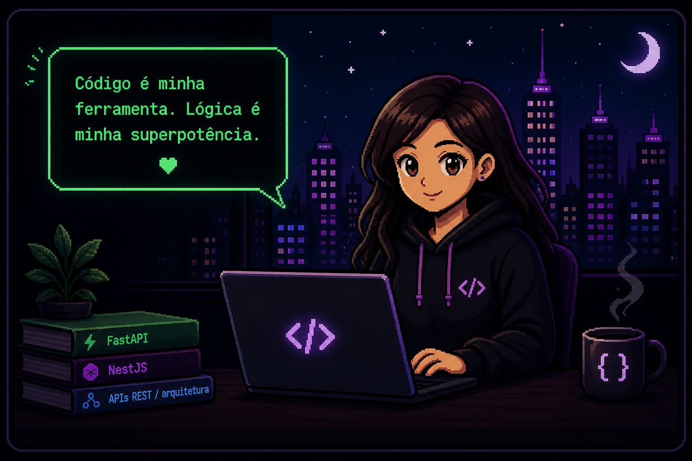

Microsservico com PostgreSQL
Servico backend para gerenciamento de dados e integracoes, com APIs REST e persistencia em PostgreSQL.
SANDY.OS v1.0.0
// OLÁ, EU SOU
Desenvolvedora Fullstack
Desenvolvo sistemas que conectam backend, APIs e
experiência do usuário.
Atuo com FastAPI, NestJS, React, Angular e PostgreSQL, criando soluções de ponta a ponta.

// TERMINAL INTERATIVO
sandy.dev@portfolio:~$ help
Comandos disponiveis:
about- quem sou eu
skills- minhas habilidades
projects- meus projetos
experience- minha jornada
contact- vamos conversar
orbitlab- simulador de fisica
sandy.dev@portfolio:~$
// MISSOES - PROJETOS EM DESTAQUE
ver todos ->Servico backend para gerenciamento de dados e integracoes, com APIs REST e persistencia em PostgreSQL.
Sistema corporativo para exibicao e gerenciamento de talentos, com foco em processos internos de relacao e gestao de colaboradores.
Simulador visual de fisica classica no navegador, que transforma formulas matematicas em simulacoes interativas em tempo real com React, MathJS e Canvas.
Aplicacao pessoal interativa para organizacao de memorias, eventos e mapas, com autenticacao e persistencia de dados.
// STACK PRINCIPAL
Backend
FastAPI · NestJS · Node.jsFrontend
React · Angular · TypeScriptBanco de dados
PostgreSQL · MySQLArquitetura
APIs REST · Microsservicos · RabbitMQ